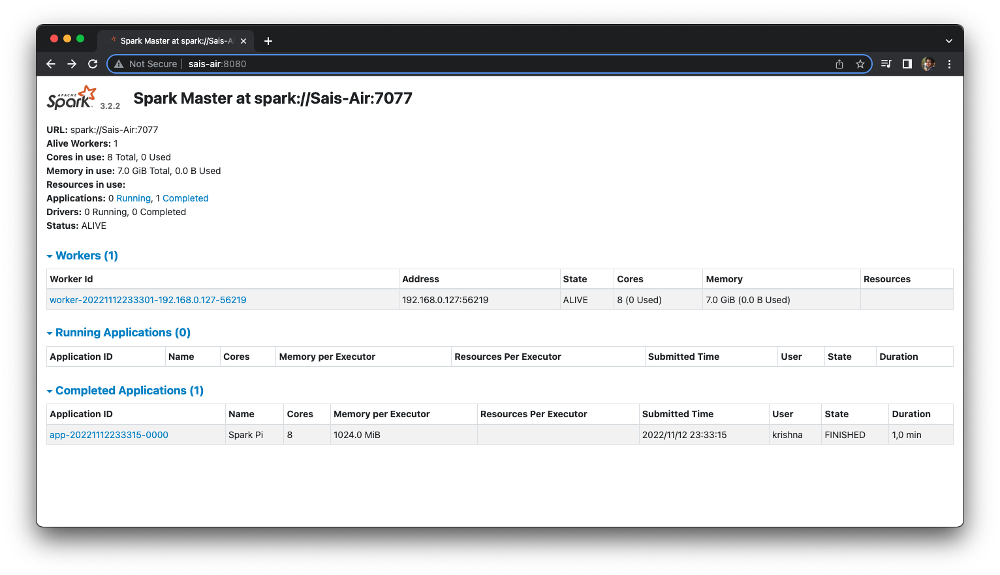

Debugging Spark jobs can be quite hard. Spark UI is one of the most important tools you have at your disposal to quickly investigate the issue you face at the moment. Lets begin by installing Apache Spark from binaries. The latest version of Apache Spark at the time of writing this blog is 3.2.2.
Environment
To prepare our environment let install Java 11 Zulu
curl -s "https://get.sdkman.io" | bash
sdk list java
sdk install java 11.0.17-zuluAfter installing the prerequisite software, Let’s start a standalone cluster. In addition there are other ways of deploying a spark cluster which we will not be covering - Mesos - Yarn - Kubernetes
# Download the latest spark binaries
tar -xvzf spark-3.2.2-bin-hadoop3.2.tgz
cd spark-3.2.2-bin-hadoop3.2/sbin
./start-master.sh
# Open another tab in the browser to check localhost:8080 works
# Copy URL, In my case its spark://Sais-Air:7077
./start-worker.sh spark://Sais-Air:7077
# On the same WebUI you will see a worker registered Congratulations, You now have Master UI on http://sais-air:8080/. Let’s submit a test job to make sure everything works well.

./bin/spark-submit \
--class org.apache.spark.examples.SparkPi \
--master spark://Sais-Air:7077 \
examples/jars/*-examples_*.jar \
1000I am on java 17.0.5-zulu. Hence have to pass extra --driver-java-options to fix the error cannot access class sun.nio.ch.DirectBuffer. StackoverFlow